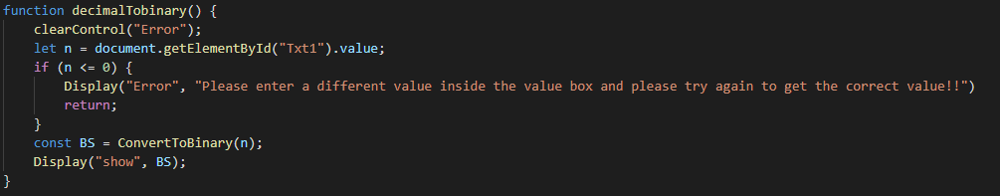
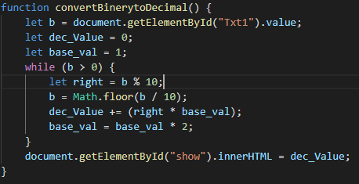
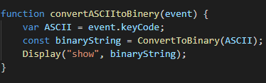

There are three types of binery conversions.
They are Decimal To Binery, Binery To Decimal and ASCII To Binery.
The image Below Shoes how to convert deciaml to Binery Conversion function.
The Image Shows how to convert Binery to Decimal conversion
The image below shows how to convert ASCII to Binery
